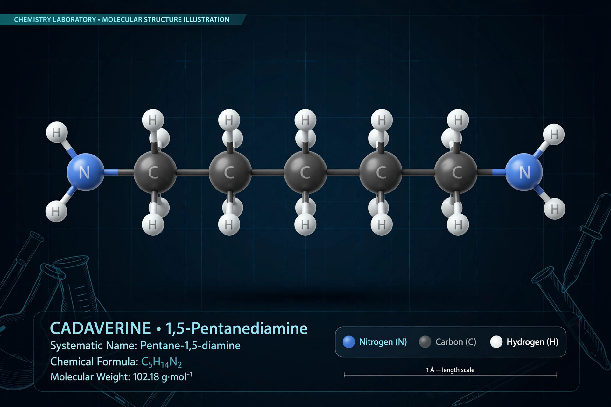

Cadaverine is an organic compound with formula (CH₂)₅(NH₂)₂ — pentane-1,5-diamine — a foul-smelling diamine produced by decarboxylation of the amino acid lysine during putrefaction of animal tissue, contributing to the odour of decaying flesh.

Bacteria produce cadaverine via lysine decarboxylase, which also helps acid resistance in gut bacteria such as E. coli. Together with putrescine it was classed among the historical 'ptomaines'. It occurs in some foods, living tissues in trace amounts, and bacterial vaginosis odour, and plants use related polyamine pathways.
Industrially, pentamethylenediamine is a precursor to nylon-5,10 and other polymers, increasingly made by bio-fermentation. Cadaverine is toxic in large doses and irritating, but normal environmental exposure is mainly notable for its smell. See Putrescine and Polyamine.